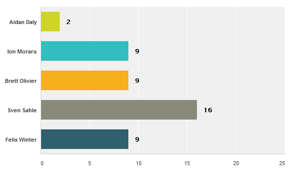
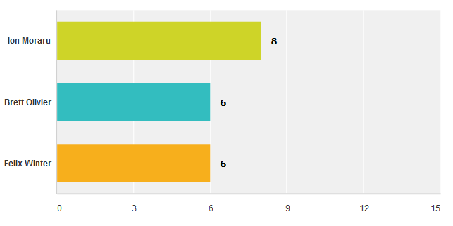

Current SED-ML Editors
The SED-ML specification is written by an editorial board consisting of five editors. They are elected by the SED-ML community (members of the sed-ml-discuss mailing list) and serve for 3-year terms as volunteers.
|
Frank Bergmann (editor, elected 2011-2014)
Frank T. Bergmann (Ph.D. in Computational and Systems Biology)
is a researcher at the California Institute of Technology where his primary interest
is in standardization efforts around SBML. He is also the lead developer of
the Systems Biology Workbench along with the LibSEDML library.
|
Dagmar Waltemath (editor, elected 2011-2014)
Dagmar Waltemath (Ph.D. in Computer Science) is a junior research group leader at the Systems Biology and Bioinformatics group at Rostock University (Germany).
Her group works on improving the management of computational models in standard formats and associated simulations in SED-ML format (SEMS).
|
Jonathan Cooper (editor, elected 2012-2015)
Jonathan Cooper is a Research
Fellow in Computational Science based in the Computational Biology Group at the University of Oxford,
with a background in computer science, software engineering, and computational biology. He has been working with biological markup languages (notably CellML) since 2005,
is a core developer of the Chaste computational biology software, and is currently developing
the concept of "functional curation", building on SED-ML.
|
|
Sven Sahle (editor, elected 2014-2016)
tba
|
Ion Moraru (editor, elected 2014-2016)
tba
|
Past members of the SED-ML editorial board
- Andrew Miller (editor, 2011-2012)
- Andrew Miller is a researcher at the Auckland Bioengineering Institute. His research interests focus around the representation of mathematical models; he is involved in the development of tools for processing CellML models, including SProS, a SED-ML processing service that forms part of the CellML API.
- Richard Adams (editor, 2011-2012)
- Richard Adams (Ph.D. in Cell Biology) is software project manager at the Centre for Systems Biology, Edinburgh. He works on the SBSI systems biology software framework, SED-ML tools and the jlibsedml Java library for SED-ML.
- Nicolas Le Novère (editorial advisor, 2011-2012, 2013)
- Nicolas Le Novère is a group leader at the EMBL-European Bioinformatics Institute. His research unfolds along two axis: 1) modelling neuronal signalling, at the molecular, sub-cellular and cellular levels, and 2) developing tools and resources for systems biology, in particular including standards.
- David Nickerson (editor, 2011-2013)
- David Nickerson is a Research Fellow in the Auckland Bioengineering Institute where he leads the Auckland Kidney Physiome project. David is also involved in many aspects of the CellML project as well as various cardiac modeling projects. He also develops several CellML-related software tools.
Results of past elections

After a tie in the first round, Ion Moraru was elected for the second position, among these three candidates:

23 people originally participated in the vote, three votes were invalid and have been removed from the final result.
(Votes and figures by surveymonkey)
sed-ml.org